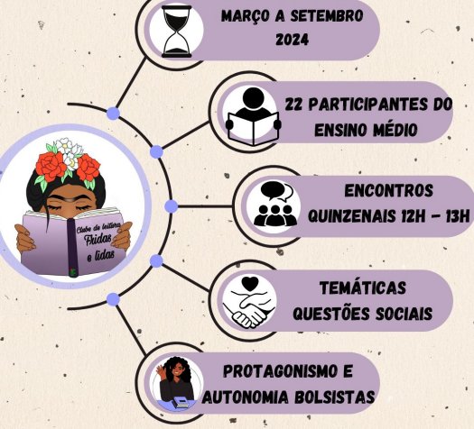
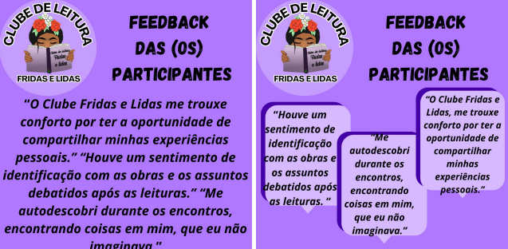
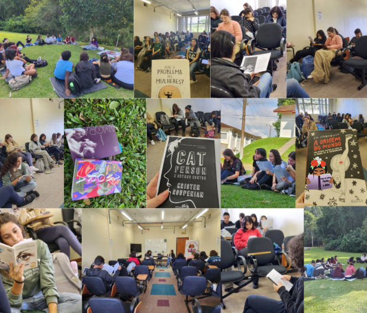

INTRODUÇÃO
O Projeto de Ensino Clube de Leitura Fridas e Lidas (Edital 118 - Reitoria IFC) realiza encontros com estudantes do Ensino médio integrado e da EJA-EPT do Instituto Federal Catarinense - campus Camboriú (IFC-CAM) para discutir obras literárias escritas por mulheres, desde 2020. Esse projeto surgiu da necessidade não só de questionar o cânone já estabelecido da literatura presente nos manuais e livros didáticos, como também de dar a devida importância para a autoria feminina (nacional e internacional). A formação de círculos de leitura é importante como recurso de inovação didática, já que, por meio de debates sobre os livros, promovemos o letramento literário e combatemos a desigualdade de gênero (Cosson, 2021).
PROCEDIMENTOS METODOLÓGICOS

RESULTADOS E DISCUSSÃO
Foi aplicado um feedback, em 2024, online que obteve 16 respostas da comunidade interna do IFC.

O projeto visa combater o "perigo de uma história única", como definido por Chimamanda Adichie (2019), incentivando a leitura de obras que trazem diferentes perspectivas, especialmente as escritas por mulheres, sobre temas literários e sociais que, historicamente, foram dominados por narrativas masculinas.

CONSIDERAÇÕES FINAIS
Incentivar a leitura de obras escritas por mulheres é um ato político que promove representatividade e equidade no ambiente escolar. O projeto "Clube de Leitura Fridas e Lidas" tem conseguido, desde 2020, reunir estudantes do IFC para discutir, a partir da literatura escrita por mulheres, questões sociais importantes. É importante ressaltar que as mediações de leitura colocam a literatura como ponto-chave para que os estudantes reconheçam as questões sociais. Mesmo sendo a literatura um objeto didatizado pelo ambiente escolar,o que de fato o Clube promove é reconhecê-lo enquanto objeto estético da Arte.
REFERÊNCIAS BIBLIOGRÁFICAS
ADICHIE, Chimamanda Ngozi. O perigo de Uma história Única.. Companhia de Letras, 2019.
COSSON, Rildo. Letramento literário: teoria e prática. 2. ed. São Paulo: Contexto, 2021